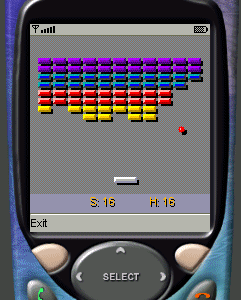
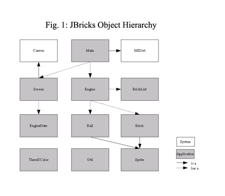
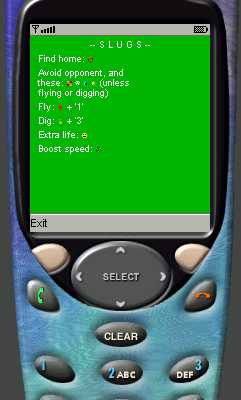
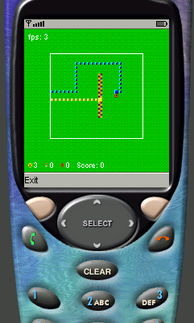
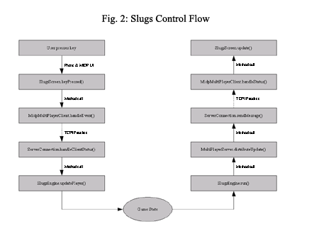
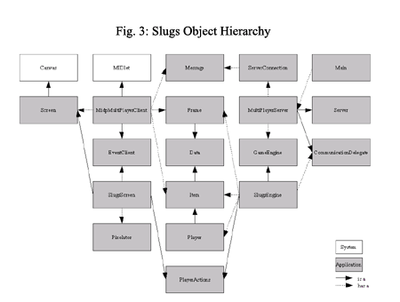

|
1 IntroductionThis article explains the essentials of Java action game development: it shows how to design, implement, and tune Java games for small devices such as cell phones. We start with a quick discussion of common types of games, followed by the challenges presented in developing these games. Then, we work through two in-depth examples of game development, starting with a simple stand-alone game, followed by a more intricate, networked game. Section two covers the stand-alone game, while the third Section discusses the networked game. For both games, we start with a description of how to play the game, followed by an explanation of the game's design choices, and, finally, we look at the details of the implementation of each game. The source code for these games is available for download from the Java BluePrints for Wireless program. 1.1 Types of Games Playing games on small devices such as cell phones brings to mind for most people different types of games. Common types include:
This document does not discuss 3D games, since small devices are commonly resource restrained with regards to memory, processor speed, and graphics performance. On the other hand, since we want to do something challenging and fun, we focus on the 2D action game category. 1.2 Common Challenges Common challenges generally include device resources, user experience, and debugging on the device. 1.2.1 Device Resources Small devices do not usually have much static or dynamic memory available. Generally, static memory holds the class files of your game (packed up in a JAR file), and the dynamic memory determines how much memory is available for a program at runtime. Thus, you need to conserve space on both the static and dynamic levels. The JAR file that contains your game should be reasonably small (a good rule of thumb is between 10-40K per game), and the amount of runtime memory required by your code should also be limited. To meet these guidelines, be aware of the number of objects you create and at which frequency. The MIDP Wireless Toolkit 2.0 (or WTK, for short) is a device emulator with a switch in its Preferences settings that lets you monitor memory usage. However, be aware that because MIDP also creates objects without your explicit consent, objects that show up in the monitor may not be caused directly by your game. Limiting the amount of objects you create is good for another reason. The less garbage (unused objects) you produce, the less often the garbage collector needs to run. The garbage collector is a background process that tries to reclaim unused memory. The processors on small devices are usually puny when compared to the CPU that powers your desktop or PDA. Small devices have clock speeds that may be as low as 15-20MHz. Also, small devices often do not have a graphics accelerator. A slow CPU and comparatively slow graphics mean that you really have to pay attention to where your program spends its time. But do not try to be too clever by anticipating performance bottlenecks. Rather, follow this time-proven approach for performance-critical programs (not just games): first make it run, the make it run right, then make it run fast. This approach only works within limits. If your game runs in full 3D, with lots of object transformations, rotations, scaling, and thousands of polygons that need to be rendered for each frame, it is going to be very hard time to make it run fast on a small device (although JSR 184 may address via hardware some of the issues). For a 2D game you do not have to be as concerned initially about your redraw strategy, as long as you feel that optimizations are possible later on. Possible optimizations might be not having to do a complete redraw for each frame. In short, examine your game design and think broadly about improving (graphics) performance later on; however, don't worry about the details immediately. Keep in mind that performance-tuned code is often much harder to debug than naive code. For that reason, we have separate tuning sections for both of our games: these tuning sections figure out where exactly our naive implementation is too slow and how to choose a faster approach. 1.2.2 User Experience Games must be fun to play; otherwise, people won't play them. With a calculator or word processor application, people may not like a cumbersome user experience but they usually choose to tolerate it, because the value of the program output outweighs the inconvenience. With games, there is no such output or other purpose. The whole point of a game is to be fun. If it's not fun and easy to use, it will fail. With small devices such as cell phones, there are several factors that can potentially negatively affect the user experience. Screens are small, so there isn't a lot of room for a display. Keys are small and may not be that easy to operate. This is especially true from a gaming context, where key presses may need to be timed to a tenth of a second to let the player advance in the game. Sound capabilities may be extremely limited: there may be no sound, just a few types of beeps, or a single tone generator. To be attractive to the user, the game must have a consistent look and feel. This means different screens should be recognizable as belonging to the same game, through the use of a consistent color scheme, backgrounds, icons, and so forth. Users do not want to see game error messages, especially cryptic ones like "HTTP 404: not found". Someone with an artistic or aesthetic sense should create the graphics and sounds for the game. 1.2.3 Device Debugging On-device debugging is usually painful for small devices. It is best
to use an emulator like the WTK whenever possible, because an emulator
gives you access to a console on which you can print messages with Another great debugging device is a demo mode for your game. Ideally, the demo mode exercises as much functionality of the game as possible. This not only lets you show the game to somebody without fear the game will die before reaching the interesting part, it also makes testing easier. Rather than spending hours pressing buttons trying to keep the game alive, you can sit back and let the program do the hard work (which is what programs are for). Couple this with some useful trace messages, and you've got a very powerful debugging tool. 2 A Stand-Alone Game2.1 Description Our stand-alone game is a fairly straight forward game involving bricks and a paddle. The player controls a paddle, which can be moved to the right and to the left. A ball bounces around inside the playing field, and the player has to meet two objectives to advance in the game. The playing field is bordered by walls on the left, right, and the top side. The bottom side (where the paddle is located) is open. To prevent the ball from falling out the bottom, the player has to keep moving the paddle to the point where the ball would drop out. The game is organized into several levels. In each level, there are a number of bricks placed in the playing field. Some of these bricks just disintegrate upon contact with the ball; others have special properties. The player has to use the ball to clear all destructible bricks from the playing field to advance to the next level. If the ball drops out the bottom, the player loses a life. The player has three lives when the game starts. Once all lives are used up, the game is over. During the game, the screen shows indicators that display the number of lives left, the current score, and the high score.
 Figure: The bricks game in Action Since this is a simple game, high scores are not saved across game invocations. The game has a splash screen that displays the name of the game, and the author name. It also has a game-over screen. Finally, it implements a demo mode, in which the paddle is controlled by the game itself. This is useful both for demo purposes and to aid in testing and debugging. 2.2 Design From the description we can identify several entities that play into the game design. These entities are (in no particular order): ball, paddle, and bricks have some things in common: a location, a size, a graphic representation, and the need to know how to handle collisions. These are all sprite properties. Since MIDP 1.0 does not provide sprite support (note that MIDP 2.0 does), we are going to have to roll our own. This is okay, since the amount of sprite functionality we require is reasonably small. With a little thought we realize that there is much shared functionality between the paddle and the bricks. Such shared functionality means that there is a good chance we do not need separate classes to implement each function. We choose a simplistic rectangle-based approach to implement collision detection. For this purpose, each sprite is represented by an x and a y coordinate, as well as width and height. This is called a bounding box. For rectangular objects like the paddle or brick, this bounding box exactly matches the object's actual shape. For the ball, the bounding box is a pretty crude approximation of that shape. With such approximations, the bounding box may be shrunk to a smaller size (e.g. 75% of the ball's diameter as the side length) to achieve more natural behavior. Two objects are considered as colliding when their bounding boxes overlap. To make the game more visually appealing, we implement a pseudo 3D look for the bricks game. Each object casts a shadow and thus appears to be floating above the screen background. The bricks and the paddle feature beveled edges to appear more three dimensional. Edges facing towards the imaginary light are highlighted, while edges facing away from the light are shadowed. The ball also has a highlight facing the light source. We create three other entities. (The need for these entities may not be immediately apparent from the game description, but they make the implementation much simpler.) The first entity groups together the bricks in a particular level, and we call it the brick list. The brick list is a container, but it also serves as a facade. Instead of telling each brick in a level to redraw itself, we just instruct the brick list to redraw and the brick list notifies each brick. To determine whether the ball has collided with any bricks, we do not have to test each brick individually, but instead ask the brick list to do the work for us. We name the second entity a screen. The screen is responsible for coordinating all drawing activity; that is, what is being drawn and in what order. The screen is also the natural place to implement the redraw strategy. We discuss this in the Implementation and the Tuning section. Finally, we need an entity that pulls it all together, something to drive the whole game. For obvious reasons, we call this entity the engine. The game is currently designed to have four levels, and this number can be extended in the future. To make this extension as simple as possible, we represent levels as data instead of code. By doing so, new levels can be read from a device database, or even downloaded from the network, with no security concerns. It also means that anyone, not just programmers, can design new levels. Note that to read new levels from external sources, code must be added to the game. However, since levels are represented as data, this code is only concerned with reading data. Another design requirement relates to screen size. MIDP does not specify a particular screen size, or even a range of permitted sizes. It is up to the device manufacturers to set a particular resolution. A common approach to this problem (particularly for games) is to assume an extremely small screen. Most devices have a resolution equal or above the assumed size. For equal resolution, the screen size is an exact match. For bigger screens the game screen is centered within the physical screen. The bricks game is a simple enough game to let us choose a more sophisticated approach. The sizes for all objects are not hard coded, but rather calculated at game startup, depending on the actual screen size. This means that the game always uses the maximum amount of available screen real estate. 2.3 Implementation True to Donald Knuth's axiom "Premature optimization is the root of all evil," we start with a naive implementation to keep things simple. Once the game is running, we identify sections for tuning. Following are interesting code snippets that illustrate particular aspects of the implementation. These snippets are presented in a bottom-up fashion, where lower-level code is discussed before higher-level code. '[...]' represents the omission of code sections that are deemed as not important in the current context.

Click to Enlarge 2.3.1 The This class implements the typesafe enumeration pattern presented in the "Effective Java Programming" book. All legal color values are accessible as public instance variables.
The private constructor prevents the instantiation of other values. The 2.3.2 The
This class serves as a common superclass to both 2.3.3 The This class implements movement and drawing for the ball. The radius value (and thus, the size of the ball) are determined based on the screen size. Each ball instance also has variables to keep track of the ball speed (dx, dy), random speed noise (xo, yo) and the ball's color scheme (color, brighter, darker). The constructor initializes the Sprite instance variables width and height based on the radius values, and also sets the color.
This class contains the concrete instructions on how a ball is drawn. 2.3.4 The
The
The constructor initializes most attributes of a brick, some of them based on the brick type. The 2.3.5 The
The 2.3.6 The
This class administers all the high-level drawing that happens in the
game. It knows how to draw the different screens discussed in the
Description section, and it knows how to ask the engine for its state
to determine which screen should be drawn. For the title screen, the
author name is animated, so that it slides in from the bottom of the
screen. This class handles that animation through the 2.3.7 The
The engine class drives the game. It holds all of the level data in the
pattern_list variable (laid out such that looking at the source gives
you an idea of what each level looks like), and defines a number of
different states that the game can be in. These states are: title,
play, over, and demo. The game starts in the title state. If a key
press happens within a certain amount of time, the game transitions
into the game state, otherwise it enters the demo state. In the demo
state, the game plays itself, until a key press happens. At that point,
the game switches to the game state. When the player has lost all of
his or her lives, the over state is entered. If a key press happens
within a certain amount of time, the game goes back into the game
state, otherwise the demo state is entered. The main loop is defined in
the In this loop, the game first updates its state. In general, user
input, timers, random number generators, and enemy AI (AI stands for
artificial intelligence, and enemy AI is a fancy term to describe how
computer-driven enemies in a game choose their behavior) drive these
state updates. When the update process completes, the screen is
redrawn. After the repaint, the engine sleeps for a while and then
starts the process again. In order to let it drive the game
independently, the engine runs in its own thread. This is implemented
by having the Notice how player key presses are handled. The keycode variable is set to the key pressed by the player when it is first pressed, and reset when it is released. The main loop moves the player paddle in the requested direction while the key is not released. This means the game is not dependent on keyboard repeat or de-bounce cycles to achieve smooth maneuverability and animation (grouping multiple key presses and releases following one another in very short succession into one press and release is called de-bouncing). 2.4 Tuning When we first run the game in the WTK or on a real device, we notice that our naive redraw approach is too slow. The animation is jerky and the game becomes unplayable. We need to fix this. The naive approach redraws the whole screen for each frame. Considering the nature of the game, this seems wasteful since there are only two things that always change between two frames: the position of the ball and potentially the position of the paddle. Once in a while, we hit a standard brick, which will disappear, or a slideable brick, which may or may not move to a neighboring position. These cases require redrawing the brick list. Upon closer examination, we discover that even then we do not need to redraw the entire list. We can simply erase a destroyed standard brick from the list, or erase a sliding brick from its old position, and draw it onto its new position. Thus, it makes sense to draw the brick list to a separate image buffer, and then to just copy the buffer onto the screen at redraw time. When the list appearance changes (because of destroyed or moved bricks), we redraw the affected portion of the list image buffer. In general, tuning is important in a few areas. Graphics performance is often the most important area, and we just took care of that. The overall computational efficiency of your game is also critical. If your game spends a lot of time in the state update of your game loop, you need to look at things like collision detection, or other compute-intensive routines. First, try to disable the routines you think might be responsible and see how this affects the CPU load. The WTK 2.0 has a tool that lets you monitor CPU usage in the emulator. Be aware, though, that CPU usage in the emulator may not mirror CPU usage on the actual device. Once you find the offender, check if your implementation of that routine can be optimized. If that is not the case, you need to come up with a different, faster approach to solving the problem. Finally, while tuning it is important to look at responsiveness. Sluggish controls are extremely annoying, and are not tolerated well by game players. 2.5 Possible Extensions Two things come to mind when thinking about extensions. First, it would be fun to introduce new brick types, for example, a bomb brick. When hit, this brick blows up and destroys all other bricks within a certain radius, even fixed or sliding bricks. Another example would be a mirror brick, which makes the paddle go left when the player presses the right key and right when the player presses the left key. The second option is to make the game network aware and allow it to download new levels from a level server. These changes should be fairly straight-forward to implement, and should not require a lot of changes or new code. 2.6 Lessons Learned The most important lesson learned in this chapter is that drawing is expensive! Thus, it pays to have a design that can deal with a change in the redraw strategy with relatively few code changes. If you compare the naive drawing approach with the tuned one, you can see that the code still looks very similar although it now runs much faster. If you are planning to actually use, or even sell, your game, you need to run it on actual devices. Although the WTK is a great development tool, there are things about your game that you will only realize when you run on a real device. 3 A Networked Game3.1 Description Stand-alone games are fun to play and to develop, but they don't take full advantage of the resources available on many small devices today, such as cell phones. Such devices are connected to a wireless network that allows the devices to communicate with one another. Communication can be incorporated into the game play. With this type of networked game, you might be on a bus riding somewhere and playing a game with your friend in a movie theater waiting for the movie to start. Our networked game is a two-player, level-based game, in which players control their character (a slug) through their own device. Players are constantly on the move and need to avoid running into obstacles. For slugs, these obstacles include level boundaries, brick walls, poison, and the opponent. Slugs leave slime in their tracks, and for the purpose of this game we decided that the tracks also represent an obstacle. The goal for each level is to be the first player to reach the one slug house present in the level. Figure: Start of Slugs Game A few things have been added to the basic scenario to make the game more interesting. Some levels have extra lives which can be picked up by the first player at that level. Also, some places have heads of lettuce, which will boost player energy upon consumption. For a short period of time, the player moves twice as fast as usual. If the player runs into one of the aforementioned obstacles, they lose a life. Each player starts out with three lives, and when the life count goes to zero, the game is over. Finally, some levels contain shovels and/or jetpacks. Upon picking up a jetpack and pressing '1' on their device, the player starts flying. When flying, the player can cross most obstacles unharmed. Walls, poison, and tracks are not harmful to the player in this state. However, colliding with a level boundary or into the opponent is still harmful. The flying state is indicated on screen by painting the player differently than in the normal crawling state. The player stays in the flying state only for a brief period of time. Once that time has passed, the usual obstacle restrictions apply. The same rules apply when the player enters the digging state, which happens when a player picks up a shovel, and presses '3' on the player's device. Note that for the players to actually collide, they need to be on the same elevation level; that is, they both need to be crawling, flying, or digging. They can cross paths unharmed as long as they move on different planes. In the game state, the bottom of the screen displays the number of remaining lives, jetpacks, and shovels held by each player. A splash screen is displayed when starting the game. This screen is a terse introduction and help screen. In a compact amount of space, this screen explains the primary goal for each level, lists the controls available to the player, and shows and explains the icons found in the levels.
 Figure: Instructions for Slugs Game Unless your game is trivial to play, you should consider following this approach. You don't want people to have to wade through a lengthy manual or help section to get started playing the game, but you don't want to leave them completely stranded either. Remember that games for small devices are often used in a different context than games for desktop machines. For the former, chances are that the person playing the game just wants to kill a few minutes waiting for something and does not want to read lengthy instructions to get started. 3.2 Design The complexity of slugs is considerably higher than that of the bricks game, primarily because slugs is a real, non-turn based, networked game. In a turn-based networked game, such as network- enabled chess, both players take turns to move (they never move at the same time) and it is always clear whose turn it is. While the design of a turn-based game is not necessarily trivial, it does not pose the same challenges as the design of a non-turn based game. For the latter, players can move at any time and there is no defined sequence to how players alternate their moves. A naive implementation might put the game engine onto the client devices and have the clients connect to each other directly, with each client forwarding events generated by the player (generally key events such as left, right, up, down) to the other player. This makes for a simple design with little overhead, but there is a problem - network latency. Due to network latency and lack of synchronization between the devices on a wireless network, game state slowly starts to drift apart. Consider a scenario where player A is headed towards a wall. A realizes the situation at the last second and makes a left turn to narrowly avoid the wall. On A's device, the crash is avoided and the game continues normally. As part of the networking code for the game, A's key press is sent out to B's device. It arrives at the device fractions of a second later. However, on B's device, another clock tick has happened just as the event arrived. This clock tick drives A into the wall, before the game has a chance to process the newly-arrived remote key press. Player A is now alive and well on A's device, but needs to be scraped off the wall on B's device. Even with extremely small network latency, this situation is bound to happen sooner or later. Synchronization problems such as this make the game unplayable, and thus they need to be avoided.
 Figure: Collision in a Slugs Game We are choosing a different approach for slugs. There is going to be a server which acts as an independent arbiter between both players. The server is the sole responsible party for managing game state. Both clients have the ability to continually deliver key events to the server. The server coalesces these events and processes them at fixed-rate intervals. At the completion of each interval, the server updates the game state based on existing and new player state, and generates events exactly reflecting the changed game state. No events are generated when the player state is unchanged. The server distributes events to both clients, which update the display based on the received data. The clients keep no local state information; instead, they forward all received input to the server for processing. Effectively, the client devices are remote terminals with a screen and input keys. The server portion of the game consists of two parts: game-independent networking code and the actual game engine. The networking code opens a server socket and listens for incoming connections. It also instantiates an appropriate game engine based on a name parameter passed to it as an argument. When it detects an incoming connection, the networking code spawns a connection object. This connection object acts as an intermediary between the game engine and the client, freeing the server game engine from knowing about how clients connect to it. As mentioned previously, the server game engine deals only with game state. It does not concern itself with networking issues or graphical representation of the game state on the client. In fact, the (indirect) interface between game engine and clients is kept sufficiently abstract so that it can deal with completely different kinds of clients. Although for this document we only implement a simple MIDP client, the engine can handle much more powerful clients with no modification. To reiterate, input to the engine consists of potentially irregular updates of client state (in the form of key press events), while output consists of regular batches of events regarding changed game state. This output effectively implements a synchronized clock for both clients. The game state is designed such that differences between individual states can be transmitted with a minimum amount of data. Each level consists of a relatively small number of cells, each cell has a state (empty, shovel, player 1 track, and so forth) associated with it. Players are always on exactly one cell and they move to the next cell in one move. Aside from a few specialized game state events, most events during the game consist of state updates to cells (consisting of the x, y location of the cell in question and an ID for the new state). The client code can also be divided into two parts: a
game-independent networking portion and the actual client visualization
component. The networking code signs the player on to the server and
instantiates the appropriate visualization component through a property
read from the
The clients and the server must be able to exchange data to communicate new events and notify each other of changed game state. We have chosen TCP/IP sockets as our underlying communication mechanism. Sockets are fast and have low overhead, but they do not provide a very rich interface for exchanging complex data types. In fact, the data we can transmit over sockets is basically limited to arrays of numbers. Although the J2SE platform has a mechanism called object serialization, which allows the developer to represent most Java objects as arrays of numbers, that API is not available for small devices.
 Click to Enlarge We define several data types suitable for communication between client and server. These types are designed to appear like "normal" Java objects, but they are easily converted to and from arrays of integers for transport over the sockets used for communication. For an additional layer of abstraction, we wrap the data in messages that have a well-defined header including the message type, serial number and size, and a variable size body. This helps the code on the receiving end of a data exchange to easily ascertain the nature of received data. The networked game consists of a number of levels that can easily be represented as data. Therefore, we do not include the definition for game levels in the game code, but rather keep the definition as separate data that is read in during the game. The first few levels are provided as flat files, but the code for parsing the level description does not care where the data actually comes from. Instead, the code expects just a reference to an input stream that contains the data. The format for describing the levels is visual and intuitive. For instance, the level data for the first level looks like this:
This defines a level that is 23 cells wide and 21 cells high. Empty cells are designated with a '.', the starting positions for the players are given with the numbers '1' and '2'. '|' represents a wall, and '@' is the house or goal that both players try to reach first. This means that for testing purposes you can use any text editor to design new levels. If you decide to write an actual level editor later, it is easy to convert your graphical representation of the level into the format just described. 3.3 Implementation The classes described in this section are divided into three groups: those shared between client and server, classes that make up the client, and classes that make up the server portion of the game.
 Click to Enlarge We start with the shared classes. 3.3.1 Data The Data class is the superclass for all data types that are written to or read from sockets. The internal representation of the object data is an array of integers. This representation makes it easy to do conversions to and from socket-compatible data. Instead of dealing with multiple, variable-sized chunks of data of different types, the data can be written and read as a compact array of integers. The Data subclasses, which use 'buf' as their internal data structure, provide the real payoff with this approach, since they provide accessor methods that emulate data types suitable for the individual subclasses (see the Item class as an example). 3.3.2 Item The primary purpose of the Item class is to represent a change in
the game state, and each item consists of an x and y location along
with an ID. The Item class defines a list of IDs, most of which are
descriptions of level cell elements, but some are "housekeeping" IDs,
such as
Notice how the accessors defined for the "logical" attributes x, y, and
status hide the fact that they are internally implemented through the
'buf' instance variable of the
The 3.3.3 Frame The Frame class represents a complete list of the changes that have
happened between two snapshots. Each item in the list is represented as
an Item instance. Since items representing players need to be treated
specially on the client side, they are grouped at the beginning of the
list. 3.3.4 Message
The Message class is to make it easier to exchange data between client
and server. Generally, when data arrives at the receiving end of a
socket, the code accepting that data does not know what kind of data it
is looking at, how much data there is, and when the data was sent.
That's why we wrap the data with message headers. Each header has a
type, which indicates what kind of data we are looking at, a size
indicator, and a frame number. Predefined types are
For this class, the methods 3.3.5 PlayerActions
The 3.3.6 Server Server, which is a small interface shared by client and server, is used to agree upon the TCP/IP port on which the server is listening for incoming client connections. The next group of classes implement the game client: 3.3.7 SlugsMIDlet
The It also reads the name of the actual visualization component from
the application descriptor file, and instantiates and initializes it.
Finally, it starts up the main loop that waits for incoming messages,
forwards received messages to the visualization component when they are
of the appropriate type. This class also defines a callback method for
the screen component ( 3.3.8 Pixelator The pixelator enables an application to create images on the fly from data generated by the application at runtime, thus avoiding having to load images stored as resources in the application's jar file. Loading pre-defined images from the resource section of the jar file is often the way to go, but if the application needs to dynamically create images at runtime, or does not want to get caught up in differences in the PNG decoder implementation for different devices, this class provides an alternate approach. You will sometimes notice that PNG images you created display fine in the WTK but not on a particular real device. You can try to figure out what it is about the image that is offensive to the device, or, for small images, you can use the pixelator to create the image in a graphics format- and flavor-independent way.
To use pixelator, first set up the palette for the pixelator. This is done by calling Here's an example of how to use the Pixelator to create a UFO-ish image.
3.3.9 EventClient
3.3.10 Screen Screen is a small interface used to decouple the screen component
from the client main class. The client main class is generic, and can
be used with different types of screen components. In fact, the client
discovers the actual type of the screen component by reading the ' 3.3.11 SlugsScreen
This class is responsible for the visualization of game state for slugs
on the client device. It also captures and pre-processes key events
generated by the player. At instantiation and with the help of the
pixelator,
Depending on the state of the client, the Finally, here are the classes that implement the server side of the game: 3.3.12 MultiPlayerServer
The
The game engine calls the 3.3.13 ServerConnection
The 3.3.14 CommunicationDelegate
The 3.3.15 Level The Level class parses an ASCII level description read from the 'in'
argument passed to the constructor. When the parsing completes
successfully, the 'player-list' argument passed to the constructor is
populated with relevant information for both players, and the level
data is converted into an array of Item instances. This array can be
retrieved using the This class performs rudimentary error checking on the level data, such as ensuring that all data lines have the same length and that each level contains exactly one definition per player. The visual representation chosen for the data ensures implicitly that there is exactly one definition per level cell. Illegal cell definitions (through use of unknown characters), are detected and reported. Note that this class makes no assumptions about from where the level
data is read. The input stream passed to the constructor could be
connected to a file, a socket, an http connection, a database, or
anything else accessible through an input stream. The internal 3.3.16 Player The Player class represents a player to the game engine. Since Player is also a subclass of Item, it is suitable for transmission over the network. Player includes several transient attributes, either because they are of interest only to the engine or because the information conveyed through them is available through other means on the client. These attributes (direction, speed, jetpack, life, shovel count, and covered item) are not transmitted when the class is written to the network. Only the core attributes of location and status are included in the transmission.
Through the 3.3.17 GameEngine
The 3.3.18 SlugsEngine
The
The main loop operates as follows: If two players are signed up, move each player by calling the
The Note that the engine code makes no assumptions about how each player client will visualize the game state. This means that the clients can change their visualization approach without requiring changes in the engine. But the implications of this strategy reach further than that. Clients of different types, with different visualization components, can connect to the server at the same time. For instance, it is possible to write a J2SE Slugs client that uses Java3D for visualization. 3.3.19 Main This is the main wrapper for the slugs game. To keep within the scope of this article, the server is implemented as a J2SE stand-alone application. In a more realistic scenario, the server would be implemented through some form of J2EE technology, such as servlets. The use of J2EE for server-side components opens access to an extensive infrastructure (such as session beans, transaction API, and so forth) that is useful for implementing billing and provisioning. 3.4 Tuning A game can be tuned in several different areas, including computational performance, graphics performance, and networking performance. All game state processing happens on a J2SE server, and the work required to update the game state is not very complex or computationally demanding. Thus, we are not going to consider tuning for computational performance. All graphics updates happen on the J2ME client. While anything to do with graphics on a small device deserves our attention, on closer examination we discover that the general level graphics are drawn from a cached image buffer, where individual cells are updated only as needed. The code that displays the player inventory at the bottom of the screen could be optimized, but, since we only aim for about three frames per second for interesting game play, even the slowest graphics implementation should have no problems with that. Thus, we are not going to optimize the graphics code either. That leaves us with networking performance. When we run the game locally in the emulator (clients and server run on the same machine, and connect over the local loopback interface 127.0.0.1), we see reliable and zippy game play. Once we move the server out onto a machine that actually sits on the net, as opposed to a LAN or WAN, we notice that the game play gets more sluggish and choppy. And as soon as we move the client code onto a real phone, the networking latency starts to really affect us. Clearly, networking performance is the critical factor for this game. We are already careful to only transmit the minimum amount of data needed to communicate state changes between client and server. It is unlikely that we are able to reduce the amount of network traffic so as to have a significant positive impact on performance. It is quite possible that the latency observed when running the client on a actual device is an inherent property of the carrier network infrastructure. In that case, we have little choice but to wait for the carriers to improve infrastructure so that it actually supports multi-player, non-turn-based games. Another idea is to switch to a different communication protocol, such as UDP. However, the code changes required for that switch are beyond the scope of this article. One thing that we can do is to investigate the influence of packet sizes on network latency. The packets we are currently transmitting are very small. If some sort of data queuing is taking place on the actual device, or within the carrier infrastructure, our latency gets bigger with smaller packets. To investigate this question, we could write a little program that generates data packets of different sizes and bounces them back between the client and the server, recording the roundtrip times. If roundtrip times get smaller with bigger packet sizes, we can assume with some certainty that some sort of queuing is taking place, and then pad the game messages appropriately. 3.5 Possible Extensions Providing a complete implementation for a multi-player game like slugs is somewhat beyond the scope of this document. The current state of the code leaves us with a game that runs well in the WTK and on devices with small networking latencies, but there are many opportunities for extensions and modifications. Basically, extensions and modifications fall into two groups. On one hand, the game lacks some functionality to be considered complete, but more importantly, we chose some rather ad hoc solutions in some places. Going forward, these should be replaced with concepts and code that makes for better end-to-end integration and leads to a more robust and versatile implementation. There are two categories of modifications. First, games like slugs have provisioning implications, such as billing, automatic selection of appropriate client application for a particular device, and level provisioning, which we have not explored so far. Since the server is agnostic of game state visualization, different types of clients can simultaneously connect to it. Right now, we have implemented only one type of client, targeted at severely constrained client devices and implemented using MIDP 1.0. Soon, more powerful devices will support MIDP 2.0 applications. In addition, nothing prevents desktop J2SE clients from connecting to the server. It would be interesting to enable client devices to describe their capabilities to the server, and then download an appropriate client implementation from the server based on that description. Also, there are interesting scenarios for provisioning new levels to the client. The developer can provide additional levels, or they can be created by third parties, such as the players, provided tools are available, such as a level editor. In this case, we need a strategy that allows people to upload level data to the server, and the server needs to be able to manage the data. Also, there are implications to consider if we decide to charge for providing extra levels. These charges could be per level or on a subscription basis. The player sign-up code in the server could be extended so that the server can handle more than two players, pairing up players automatically. Players would then be represented through a nickname, and rudimentary security measures would have to be implemented to deal with cheaters and denial-of-service attacks. As mentioned previously, it might make sense to try and replace the TCP/IP socket-based communication between client and server with UDP sockets, possibly reducing networking latency considerably. Finally, there are a few minor issues that relate to game play directly. Right now, score is displayed on the client device, but no scoring approach has been devised. It would be useful for the player to receive a visual indication when their flight or dig mode is about to expire, so as to let them take the necessary actions to return to regular crawling. And, upon having to go through a level more than once, consumables like shovels, jet packs, and extra lives should not be refilled on subsequent iterations. 3.6 Lessons Learned Multi-player games are quite complex. Depending on the actual design for the game, potential pitfalls include computational performance, graphics performance, and networking performance. The game needs to perform reasonably in all categories, or it becomes unplayable. For these types of games, an emulator like the WTK is a good starting point. However, testing on a real device should commence early during the development cycle to detect potential problems. Back To Top |